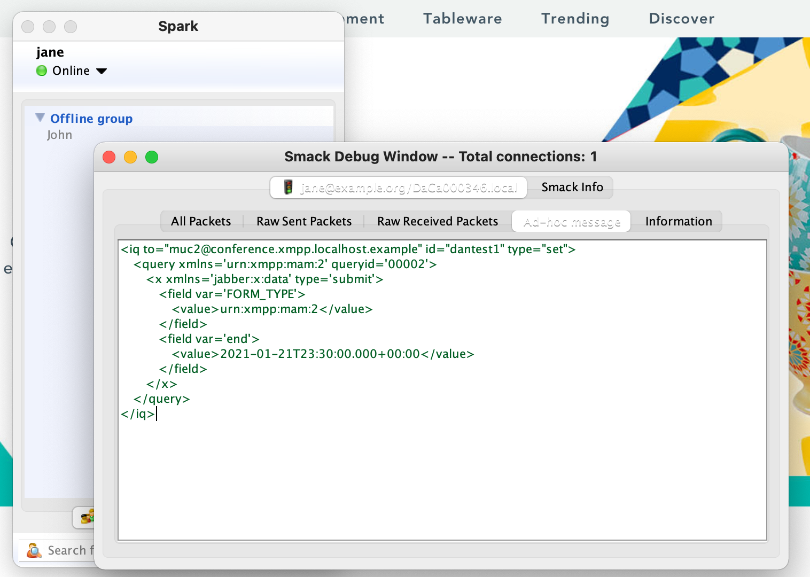

Collected tips & tricks for developers and other software engineers working with Openfire
Nothing has sped me up more than being able throw up environments quickly using Docker. Whether it's comparing behaviour, or testing a branch, Docker is fast and trouble free. The only time it's less useful is when you're testing integrations, e.g. Active Directory.
From a terminal in the root of Openfire run:
./build/docker/buildWithDocker.sh docker build . -t openfire:mything
There are quite a lot of ports involved, or there can be, depending on what you're doing. This list includes pretty much everything. Some of them may conflict with things already running, in which case you'll either need remap, or switch port and reconfigure Openfire accordingly
docker run --rm -it -p 3478:3478/tcp -p 3479:3479/tcp -p 5222:5222/tcp -p 5223:5223/tcp -p 5229:5229/tcp -p 5262:5262/tcp -p 5263:5263/tcp -p 5275:5275/tcp -p 5276:5276/tcp -p 7070:7070/tcp -p 7443:7443/tcp -p 7777:7777/tcp -p 9090:9090/tcp -p 9091:9091/tcp openfire:mything
In fact, I've used this so often, I have it as a Bash alias
function ofdocker(){
DOCKERCMD="docker run"
DOCKERCMD="${DOCKERCMD} --rm -it"
DOCKERCMD="${DOCKERCMD} -p 3478:3478/tcp -p 3479:3479/tcp -p 5222:5222/tcp -p 5223:5223/tcp"
DOCKERCMD="${DOCKERCMD} -p 5229:5229/tcp -p 5262:5262/tcp -p 5263:5263/tcp -p 5275:5275/tcp"
DOCKERCMD="${DOCKERCMD} -p 5276:5276/tcp -p 7070:7070/tcp -p 7443:7443/tcp -p 7777:7777/tcp"
DOCKERCMD="${DOCKERCMD} -p 9090:9090/tcp -p 9091:9091/tcp"
DOCKERCMD="${DOCKERCMD} openfire:$1 $2"
${DOCKERCMD}
}
The 2nd parameter is passed as CMD params through to Openfire's launch script, so you can do:
ofdocker mything -demoboot
This may go without saying, given that it's also an Ignite Realtime tool, but the Spark client is as handy for devs as it is for users. Being able to set up a test, then hand-crank some XML that matches a specific use-case or XEP example is invaluable.
After sending a stanza, you can use the other views on this pane to see all of the sent & received packets.
Enable this from Spark's login pane - Advanced > General > Start debugger on startup
Some will see the Smack integration tests as unusual. In the Smack project, they're used with a stable XMPP server to test Smack client capabilities. In the Openfire project, they're used with a stable Smack version to test Openfire. Regardless, they are good standards-compliant implementation of XMPP client/server contracts that exercise functionality described in RFCs and XEPs.
Clone the code with git clone git@github.com:igniterealtime/Smack.git
On a Mac, you'll hit the problem of a case insensitive file system. The way round this is to use Disk Utility to create a case-sensitive APFS volume to clone into (which via the Terminal will be diskutil apfs addVolume disk1 'Case-sensitive APFS' Smack)
gradle integrationTest will run the whole suite with default settings
There are plenty of extra parameters you can pass in for controlling which tests to run, who to authenticate as, and what the target of the tests should be. For example, this will run against xmpp.localhost.example instead of example.com, sets the auth credentials for the admin user, and runs only the MUC tests:
gradle integrationTest -Dsinttest.service=xmpp.localhost.example -Dsinttest.adminAccountUsername=admin -Dsinttest.adminAccountPassword=admin -Dsinttest.securityMode=disabled -Dsinttest.enabledTests=MultiUserChatIntegrationTest
Testing for out-of-date dependencies is important, especially as a release approaches. You can test for ones with known CVEs using dependency-check from within the project using what's built into the POM:
mvn verify -P deps
Or to see all dependencies with potential updates:
mvn versions:display-dependency-updates
I know we've talked about Openfire Docker containers already, but this is more.
For a proper representation of a running system for testing out new features, you need Docker Compose.
For example, https://github.com/surevine/openfire-docker-compose has configuration options to run Federated or Clustered configurations, backed by databases. This could be extended or used as inspiration for other configurations, such as different/clustered databases configurations, or an LDAP user source.
When developing features or diagnosing problems, there are several useful plugins for working with Openfire.Most can be installed via the Plugins pane of Openfire. Sometimes it's useful to load them manually as JARs, especially if you're editing and building your own.
Examples:The useful repositories are all on GitHub, and most are under the Ignite Realtime organisation
Examples:https://xmpp.org/extensions/ gives a list of XEPs (XMPP Extension Protocols). It also has links to the RFCs at the top of the page which define the basic operations of XMPP, but those are likely to be of interest & reference only, since for features and bugfixes most work relates to one of the XEPs.
Examples:If you're stuck on an Openfire problem, come and ask in the open_chat channel.
You can visit us via XMPP directly at open_chat@conference.igniterealtime.org, or access via our website, here.